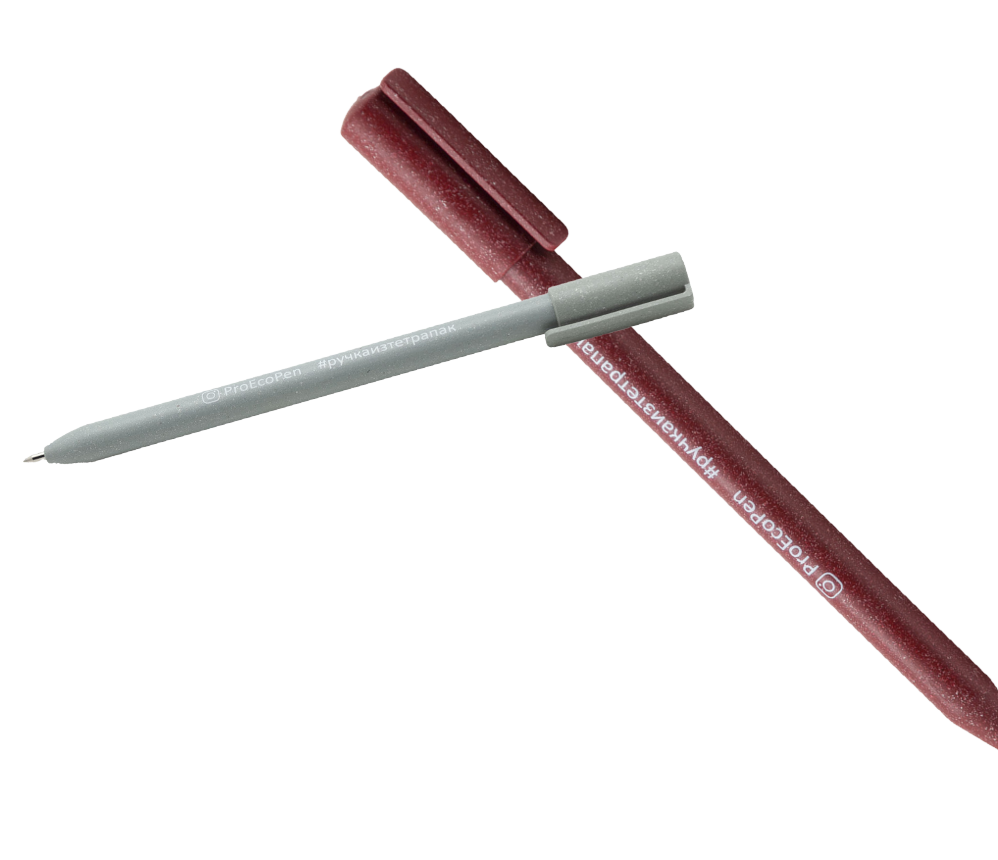

Из многокомпонентного
и сложноперерабатываемого вторсырья, тем самым мы замыкаем цепочку сбора и переработки отходов.
Наш слоган «Дадим упаковке вторую жизнь!»
За 2020 год мы произвели более 200 тыс. ручек и блокнотов, при
этом переработано более 1 200 000 литровых пакетов Тетра
Пак (1,2 тыс. контейнеров мусора
не уехали на свалку)
ЧТО
МЫ
ДЕЛАЕМ

Упаковка Tetra Pak состоит на 75% из картона, на 23% из полиэтилена
и на 2% из алюминия. Использованные упаковки сначала отправляются
на сортировочный цех, а потом на заводы по переработке.
Сначала упаковку делят на целлюлозное волокно и полиалюминий — смесь
полиэтилена и алюминия. Далее полиалюминий очищают и гранулируют.
Из полиалюминиевых гранул делаются ручки «Эко» и другие сувениры.